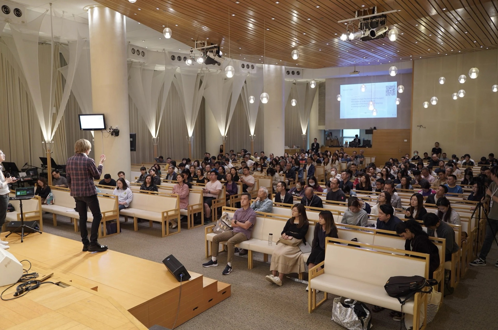
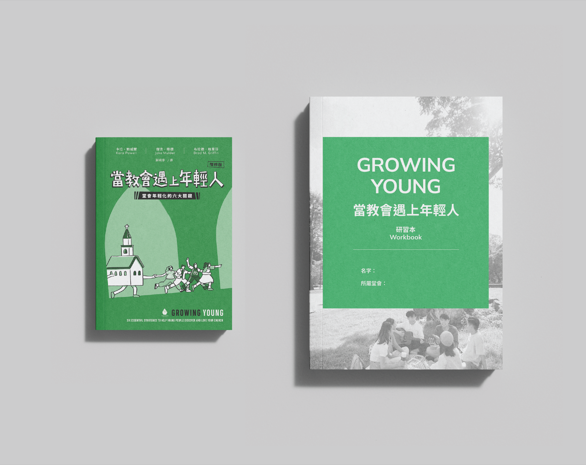

Growing Young「讓教會年輕化課程」
讓年輕人愛上你的教會
立即報名在這個計劃中，你將會學到⋯⋯
六個核心承諾
社青面對的生命過渡
台灣教勢分析
教會更新的調適性領導力
GROWING YOUNG
呼召導向生涯規劃
青少年門徒訓練
青年事工聖經原則和神學反思
我們明白牧養青年的挑戰
Growing Young Conference 2026 教會年輕化研討會
累計 > 位參與者
來自 > 間教會

Growing Young Cohort 讓教會年輕化課程
累計 23 間香港教會
7 間台灣教會
香港學園傳道會出版《Growing Young》
中文增修版及研習本

導師及本地教練團隊包括：
（名字按中文姓氏筆劃排序）
美國富勒神學院教授
- 陳保焜傳道
我們藉著這個課程有新的啟發，學會用新的角度去牧養我們的下一代⋯⋯
香港學傳在港開辦青少年牧養會議及招募伙伴教會，一起推動和協作，為處於低迷的香港教會帶來動力和想像。我在此誠意向你推薦。
這個課程讓教會不同的崗位上可以一起配搭，一起共識一個目標 ⋯⋯ 為了教會這個青年牧養的工作來同心努力。
這個課程我們有意識形態的改變，讓教會群體由下而上也感受到有一種很銳意想更新的氣氛。
六大核心承諾讓人明白到教會年輕化不單是年輕信徒的牧者或導師的責任，乃是整個堂會文化的更新工程⋯⋯
曾受邀到不同教會與機構分享社青牧養的議題
All churches grow old. Strategic churches are growing young.
過往十年，富勒青年研究中心 (Fuller Youth Institute) 針對「教會年輕化」(Growing Young) 的課題調查 250 間青年事工卓越的教會，研究「哪些策略能有效地讓年輕人融入教會？」、「若想讓教會年輕化，具體可做些甚麼？」等問題。這研究歸納出「六個核心承諾」去幫助教會年輕化，也建議了一些具體步驟。
Growing Young Cohort（簡稱 GYC）便是基於此研究成果而設計的課程。這課程透過以下的活動，去幫助教會按自身的處境，設計一系列計劃，去讓教會變得年輕化。
- 課堂學習：由富勒神學院教授和認可導師指導，課堂主題涵蓋教會年輕化的六個核心承諾、社青面對的生命過渡、專注聆聽的教練技巧、調適型領導力、呼召導向的生涯規劃、衝突處理與情緒健康，以及青年事工的聖經原則與神學反思
- 教會評估 Church Assessment：啟發教會需要成長的地方並制定建議
- 教練約談：由富勒神學院青年研究中心認可的教練指導教會團隊
- 教會轉化計劃 Church Transformation Plan：在教練指導下，完成具體的教會轉化計劃
- 教會交流：與相似價值的主內同道彼此交流
在這三個月中，在教練的引導下，期望參與者在教會嘗試實踐更新計劃，並在五月的閉幕禮中分享嘗試成果。
在 2000 年，美國社會學家阿奈特（Jeffrey Arnett）提出把 18–29 歲劃分為一個新的生命階段—「成年初顯期」（Emerging Adulthood，簡稱成青期），以更準確地描述當今青年的新處境。今天的青年需要多 5–10 年才達到過往慣常認為成人的指標，如完成學業、開始工作、結婚、生小孩等。
成青期是一個充滿探索和機會的階段，同時又面對著轉變、不安和壓力的時期。成青的學業和工作比以往更多變和更忙碌，這令到成青往往不易穩定地出席教會活動。若教會不明白他們面對新處境，便會誤解他們為不忠心和不屬靈。若教會能以同理心回應成青的掙扎和挑戰，能提供支持和同行，成青信徒便不會流失，甚至能紮根在教會。
課程設有三項課外活動，包括聆聽之旅、教會年輕化評估問卷及教會更新計劃。每個團隊都會配有一位教練協助引導完成相關功課，確保既符合課堂期望，也切合各教會的實際需要。
本課程旨在幫助教會掌握年輕化的原則與方向，並不期望一步登天。在制定更新計劃時，鼓勵由小處著手，在邊緣位置先作嘗試（testing on the margin），並在過程中與教會領袖持續討論與規劃，循序漸進地推動改變。
部分過往參與者會繼續與教練聯繫。此外，學傳即將出版新書《Future Focused Church》，從領導力角度探討如何持續推動教會年輕化，並附有研習指南，協助教會進一步實踐與深化學習。